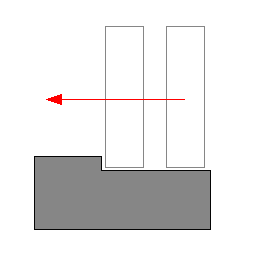
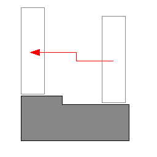
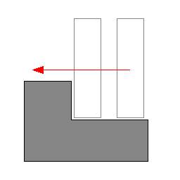

Without auto-stepping, it is easy for a box-controlled character to get stuck against slight elevations of the ground mesh. In the following picture, the small step would stop the character completely. It feels unnatural because in the real world you would just cross this small obstacle without thinking about it.

This is what auto-stepping enables us to do. Without any intervention from the player, the box correctly steps above the minor obstacle as shown below:

However, if the obstacle is too big (i.e., its height is greater than the stepOffset parameter), the controller can't climb automatically over, thus the character gets stuck (correctly this time):

Climbing (over this bigger obstacle, for example) may be implemented in the future as an extension of auto-stepping. A related parameter is given below:
NxControllerDesc::stepOffset
In order to implement the auto-stepping feature, the SDK needs to know about your up vector. The character controller only supports the axis-aligned axes listed below:
The SDK is not scheduled to support arbitrary up vectors at this time.
A related parameter is given below:
NxControllerDesc::upDirection